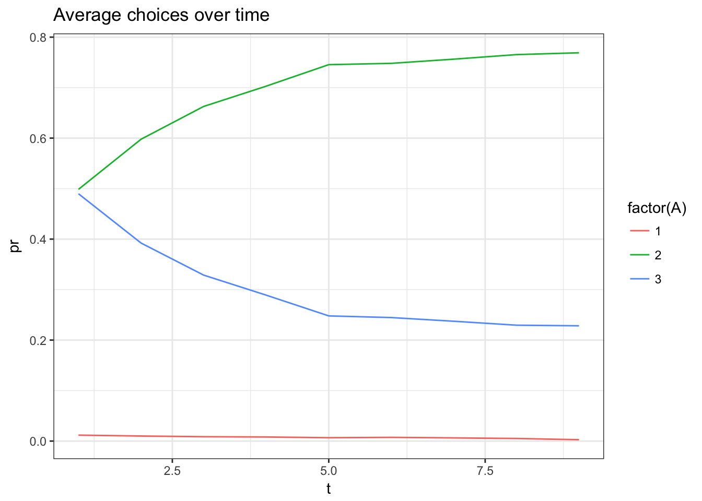
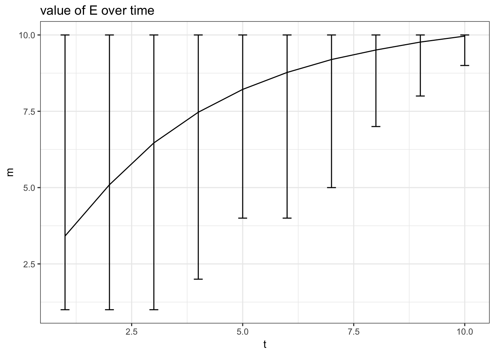

Let’s consider a simple dynamic programing problem. In this problem set we want to simulate from a single agent problem and use the Hotz and Miller approach to recover the parameters.
Let’s use a very simple model that we can solve exactly. The state space will be discrete, we will consider a two sector problem and staying at thome. We will use Rust assumptions. For simplicity we consider only 10 years.
We consider the following preferences:
\[ U(w,a,\xi) = \gamma \cdot \underbrace{\frac{w^{1-\rho}}{1-\rho}}_{u_0(w)} + u(a) + \xi(a)\] where \(\xi(a)\) is an iid, type 1 extreme value shock, and \(u(a)\) is a permanent preference vector. We consider the following wage equation:
\[ \log(w_{it}(a)) = \beta_a E_{it} + \beta_r t + \epsilon_{it}(a) \] where \(E_{it}\) is a stochastic observed experience value. \(\epsilon(a)\) is iid and normaly distributed. The agent does not know the \(\epsilon(a)\) at the time where she decides which action \(a\) to choose. As we know we can solve for the expected value function given by:
\[ \bar{V}_t(x) = \log \sum_a \exp \Big[ \mathbb{E} U(w,a,\xi) + \beta \sum_{x_{t+1}}\bar{V}_t(x_{t+1}) g(x_{t+1}|a) \Big] + \gamma_c\] because of the log-normal shocks we get that
\[ \begin{align*} \mathbb{E}_\epsilon U(w,a,\xi) &= \gamma \cdot \underbrace{\exp \Big( (1-\rho)^2 \sigma_\epsilon^2/2) \Big)}_{S} \cdot \underbrace{\frac{ (\beta_a E_{it} + \beta_r t)^{(1-\rho)} }{1-\rho}}_{u_0(\mathbb{E}\log w)} + u(a) + \xi(a) \\ &=\gamma S \cdot u_0(\mathbb{E} \log w) + u(a) + \xi(a) \end{align*}. \]
We set parameters and initialize the transition matrices, value functions and Q-values.
# setting paramters
initp <-function() {
p = list(nt=10, # nb of periods
ne=10, # nb of experience level
rho=2, # risk aversion
wsd=1, # standard deviation of wage shock epsilon
r1=0.1,r2=0,rt=0.05, # return to experience in activity 1 and 2, and age effect
u0=0,u1=5,u2=4, # preference values for each choice
r=0.02,
gamma=1.2) # discount paramter
}
gc = -digamma(1) # Euler constant
# construct transition matrix for each choice
trm <- function(d,s,n) {
X1 = spread(qnorm( (1:n)/(n+1) ),1,n)
D = dnorm( X1 - (t(X1) +d),0,s)
D = D / spread(rowSums(D),2,n)
}
# function to initialize the model
model.init <- function(p) {
# init value function
V = array(0,c(p$nt,p$ne))
# init Q-value
QQa = array(0,c(p$nt,p$ne,3))
# global transition matrix
GG = array(0,c(3,p$ne,p$ne))
GG[1,,] = trm(-0.2,0.1,p$ne) # when not working, epxerience depreciates
GG[2,,] = trm(0 ,0.1,p$ne) # in activity 2, experience does not accumulate
GG[3,,] = trm(1 ,0.1,p$ne) # in activity 3, experience accumulates
return(list(V=V,QQa=QQa,GG=GG))
}
# define utility function
uf <- function(w,p) p$gamma*(w^(1-p$rho))/(1-p$rho)We then solve the values recursively
model.solve <- function(model,p) {
V = model$V
Vf = model$Vf
QQa = model$QQa
GG = model$GG
# scaling due to the shock
S = exp( p$wsd^2 * (1-p$rho)^2/2)
# final values (get the same choice for ever)
Vf = cbind( p$u0 , S*uf( exp(p$r1 * (1:p$ne) + p$rt*p$nt) ,p) +p$u1, S*uf( exp(p$r2 * (1:p$ne) + p$rt*p$nt) ,p) + p$u2)/p$r
V[p$nt,] = log( rowSums(exp(Vf))) + gc
QQa[p$nt,,] = Vf
# construct Q value for each choice of the 3 choices
for (t in (p$nt-1):1) {
Q0 = p$u0 + 1/(1+p$r)* GG[1,,] %*% V[t+1,]
Q1 = S*uf(exp(p$r1 * (1:p$ne) + p$rt*t) ,p) + p$u1 + 1/(1+p$r)* GG[2,,] %*% V[t+1,]
Q2 = S*uf(exp(p$r2 * (1:p$ne) + p$rt*t) ,p) + p$u2 + 1/(1+p$r)* GG[3,,] %*% V[t+1,]
QQ = cbind(Q0,Q1,Q2)
V[t,] = log(rowSums(exp(QQ))) + gc
# saving the choice probability
QQa[t,,] = QQ
}
model$V = V
model$QQa = QQa
model$S = S
model$Vf = Vf
return(model)
}Then we simulate a data set:
model.simulate <- function(model,p,N) {
V = model$V
Vf = model$Vf
QQa = model$QQa
GG = model$GG
simdata = data.table(ii=1:N)
R = c(0,p$r1,p$r2)
dE = 1:p$nt
dW = 1:p$nt
dA = 1:p$nt
simdata = simdata[,{
dE[1] = sample.int(p$ne,1,prob=1/(1:p$ne))
for (t in 1:p$nt) {
pr = exp(QQa[t,dE[t],] - max(QQa[t,dE[t],]))
dA[t] = sample.int(3,1,prob= exp(QQa[t,dE[t],]))
dW[t] = exp(R[dA[t]] * dE[t] + p$rt*t + p$wsd*rnorm(1))
if (dA[t]==1) dW[t]=NA;
if (t<p$nt) {dE[t+1] = sample.int(p$ne,1,prob=GG[dA[t],dE[t],])}
}
list(A=dA,W=dW,E=dE,t=1:p$nt)
},ii]
return(simdata)
}We can simulate and look at some stats:
p = initp()
model = model.init(p)
model = model.solve(model,p)
simdata = model.simulate(model,p,10000)
rr = simdata[,.N,list(A,t)][,pr:=N/sum(N),t]
ggplot(rr[t<10],aes(x=t,y=pr,color=factor(A))) + geom_line() +ggtitle("Average choices over time") + theme_bw()
rr = simdata[,list(m=mean(E),q975=quantile(E,0.975),q025=quantile(E,0.025)),t]
ggplot(rr,aes(x=t,y=m,ymin=q025,ymax=q975)) + geom_line() + geom_errorbar(width=0.2) +ggtitle("value of E over time") + theme_bw()
We want to apply the Hotz and Miller approach to estimate this dynamic programing problem.
Show that you can recover direclty the parameter of the wage equation in this problem. Write the regression code that recovers them. Also write code that recovers the transition matrices \(G_0,G_1,G_2\). Show that the \(G\) estimated matrices align with the true one.
Then do a parametric estimation by imposing the known form for the transition and recover the slope and variance parameters use for each \(a\) in the first part. In other words use a minimum distance to recover the 2 parameters used in the trm function to generate the law of motions.
We start with a simple case where there is full discounting. Express \(\log(Pr[a=2|E,t] / Pr[a=1|E,t])\) and \(\log(Pr[a=3|E,t] / Pr[a=1|E,t])\). Write down an estimator (which is linear) for \(u(a=2)\) and \(u(a=3)\) in this case and show that you can get the values from simulated data.
As an intermeidate step, compute the realized choice probability at each \(x,t\) with data simulated using \(r=\infty\). Plot each of this probability against the true probability that you can compute using the true parameters. This graph should be close to the 45 degree line.
The risk aversion coefficient does not enter linearly in the utility problem. We are going to fix it, and use the Hotz and Miller approach conditional on the value of \(\rho\). So Assume that \(\rho\) is known and fixed at its true value. We need to construct our expressions that will help us recover \(u(a=2)\) and \(u(a=3)\) in this dynamic case. This requires the use of the Euler cosntant \(\gamma_e = 0.577\).
Let’s start with a simple observation. If you consider a static problem of the form:
\[V = \mathbb{E} \big[ \max_k u_k + \xi_k \big] = \log \sum_k \exp(u_k) + \gamma_c\]
we also know that: \[ Pr[k] = \frac{\exp(u_k)}{\sum_{k'} \exp(u_{k'})} \]
but also, we can express \(V\) usin these choice probabilities:
\[ V = \sum_k Pr[k] \cdot \big( u_k + \mathbb{E} [\xi_k|k] \big) \] where finally we also know that \(\mathbb{E} [\xi_k|k] = \gamma_c - log(Pr[k])\). This then gives us that:
\[ V = \sum_k Pr[k] \cdot \big( u_k + \gamma_c - log(Pr[k]) \big) \]
We then use the recursive formulation of the value function which was:
\[ \bar{V}_t(x) = \log \sum_a \exp \Big[ \mathbb{E} U(w,a,\xi) + \beta \sum_{x_{t+1}}\bar{V}_t(x_{t+1}) g(x_{t+1}|a) \Big] + \gamma_c\]
where we have that \(\mathbb{E} U(w,a,\xi) = \gamma S u( \exp(\mathbb{E}\log w))\). At this point we are interested in recovering \(u(a)\) and \(\gamma\). We can look at the final period and see that
\[ \begin{align*} \bar{V}_T(x) &= \mathbb{E} \max_a \Big[ \gamma \cdot S \cdot u_0(\exp(\mathbb{E}[\log w|x,t])) + u(a) \Big] \\ &= \sum_a Pr[a|x,t] \Big( \gamma \cdot S \cdot u_0(\exp(\mathbb{E}[\log w|x,t])) + u(a) + \gamma_c - \log Pr[a|x,t] \Big) \\ &= \gamma \cdot \Big( \sum_a Pr[a|x,t] \cdot S \cdot u_0(\exp(\mathbb{E}[\log w|x,t])) \Big) + u(a) \cdot \Big( \sum_a Pr[a|x,t]\Big) \\ & \hspace{5cm} + \gamma_c - \sum Pr[a|x,t] \log Pr[a|x,t] \\ \end{align*} \]
Call \(\theta = (\gamma,u(2),u(3))\), we have found a matrix \(B_T\) which is \(n_e \times 3\) and a vector \(A_T\), functions only of data and of known parameters, such that \(\bar{V}_T = A_T + B_T \theta\). Strictly speaking we could just recover the parameters directly here! But for the sake of the exercice we are going to use all time periods.
At each period \(t\) we have that the flow payoff can be expressed linearly. In other words, there exists a \(\tilde{B}_t(a)\) such that \(\mathbb{E_t}[u(w_t)|x,a] = \tilde{B}_t(a) \theta\). We can now express \(A_t\) and \(B_t\) recursively. I write in matrix form where rows are difference values of \(x=E\) and \(P_t[a]\) is diagonal matrix with values \(Pr[a|t,x]\):
\[ \begin{align*} \bar{V}_{t} &= \log \sum_a \exp \Big[ S \cdot u_0(\exp(\mathbb{E}_{t} \log w_{t})) + u(a) + \beta \cdot G(a) \times \bar{V}_{t+1} \Big] + \gamma_c \\ & = \log \sum_a \exp \Big[ \tilde{B}_{t}(a) \theta + \beta G(a) (A_{t+1} + B_{t+1} \theta) \Big] + \gamma_c \\ & = \sum_a P_t[a] \Big[ \tilde{B}_{t}(a) \theta + \beta G(a) (A_{t+1} + B_{t+1} \theta) - \log Pr[a|t,x] \Big] + \gamma_c \\ & = \underbrace{\Big( \sum_a P_t[a] ( \tilde{B}_{t}(a)+ \beta G(a) B_{t+1}) \Big)}_{B_{t}} \theta + \underbrace{ \sum_a \beta G(a) P_t[a] A_{t+1} + \gamma_c - (\sum_a P_t[a] \log P_t[a]) \times \mathbf{1}}_{A_{t}} \end{align*} \]
Where we combine the two terms to construct \(B_{t-1},A_{t-1}\) to get:
\[ \begin{align*} B_{t-1}[x,j] & = \sum_a Pr[a|x,t] \tilde{B}_t(a,x,j) + \beta \sum_a \sum_{x'} Pr[a|x,t] G(a,x',x) B_{t+1}(x',j) \\ A_{t-1}[x] & = \gamma_c + \beta \sum_a \sum_{x'} Pr[a|x,t] G(a,x',x) A_t(x') - \sum_a Pr[a|x,t] \log Pr[a|x,t] \end{align*} \]
The current question asks you to write the code that construct this sequence of \(B_{t-1},A_{t-1}\) as a function of measured choice probabilities \(Pr[a|x,t]\). Provide such code (note that RcppSimpleTensor can help a lot here). To verify that your code is correct, construct the \(B_{t-1},A_{t-1}\) associated with the true probabilities coming constructed from model$QQa, then using the true \(\theta\), plot your generated \(A_t + B_t \theta\) against the model$V which should line on the 45 degree line as in the previous question.
Compute the choice probabilities in the simulated data \(Pr[a|E,t]\). Use these conditional choice probabilites to reconstruct the values using the procedure you developed in the previous section (here you can use the know parameters for the wage equation). The final step is regress the log ratio of choices on the linear expression to recover \(\gamma\) and \(u(2),u(3)\) from the simluated dynamic data. Report the estimated paramters (once you have \(B_{t-1},A_{t-1}\), this a linear regression!).
In this final question we want to put it all together: 1. Recover the wage and transition parameters as in the first question 2. Recover \(\gamma\) and \(u(2),u(3)\) using steps of the previous question for a fixed value of \(\rho\) 3. Run the previous step for a grid on \(\rho\) (report this plot)